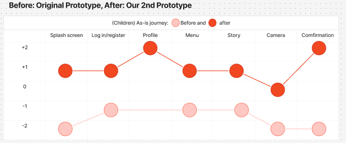
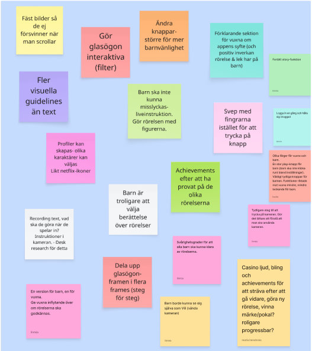
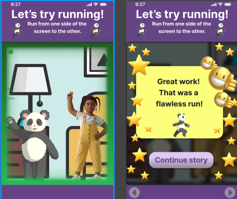
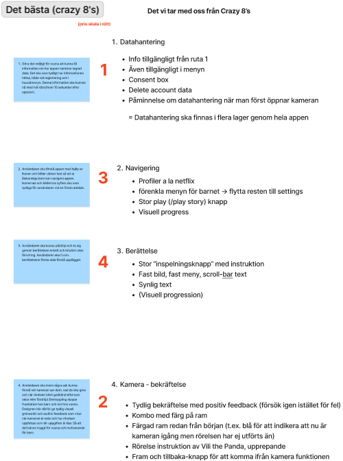
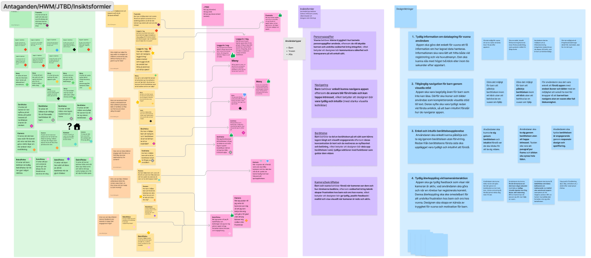
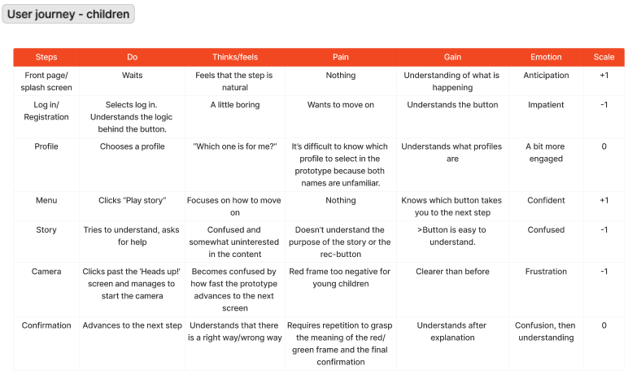
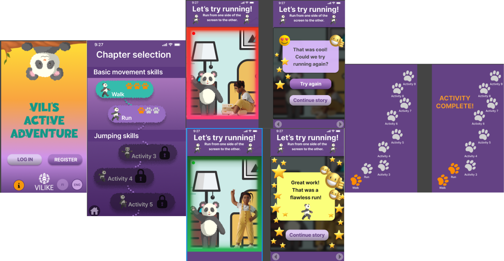

Designing a gamified experience that encourages children to stay physically active through play, progression and rewards.

Many children move too little in their daily lives, which affects both health and well-being. Existing solutions lack clear motivation systems and engaging experiences.

I developed the concept by working with user flows, wireframes and prototypes. The focus was on creating a playful experience with clear progression and reward systems.

The result is a concept for an engaging app that encourages children to move daily through gamification and visual feedback. The design makes it easy to understand progress and creates motivation over time.
Behind the Design
The process moved from early ideation and problem framing to user journeys, visual exploration and an interactive prototype focused on motivation, progression and playful engagement.

Rapid ideation exercise exploring multiple ways to motivate children through movement.

Identifying user needs, assumptions and key opportunities to define the design direction.

Mapping the child's experience to understand motivations, pain points and engagement moments.

Interactive concept prototype showcasing core flows, rewards and progression systems.
Small rewards, progression systems and visual feedback can motivate long-term engagement and encourage healthy daily habits.
Designing for children requires simple interactions, clear navigation and immediate feedback to create an intuitive and enjoyable experience.
Collaborating with a real company strengthened my ability to balance user needs, business goals and iterative design throughout the UX process.
Reflection
Designing for children challenged me to think differently about motivation, simplicity and accessibility. It reinforced that successful experiences are not always the most complex—they are often the easiest to understand and the most enjoyable to use.
This project gave me valuable experience collaborating with an external company and showed how user needs, business goals and playful interaction design can come together in a meaningful digital experience.